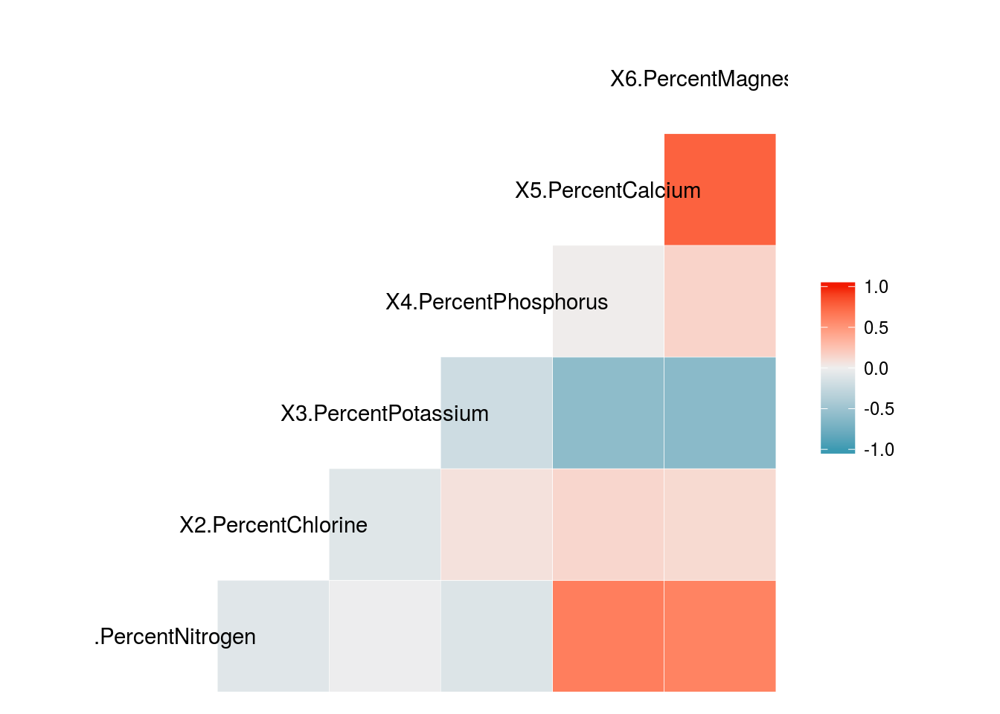
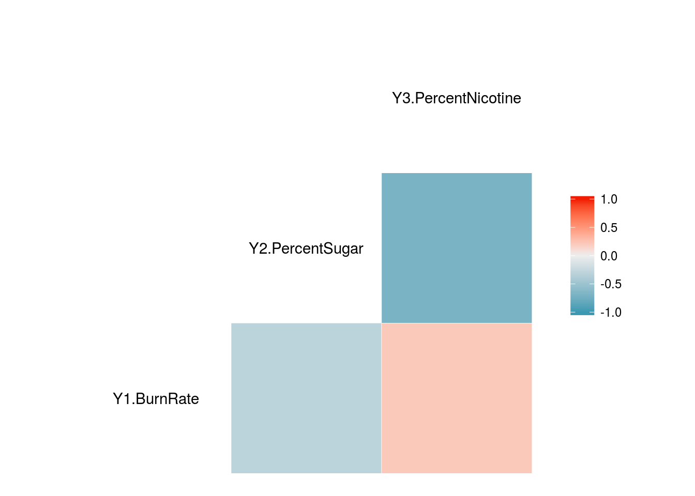
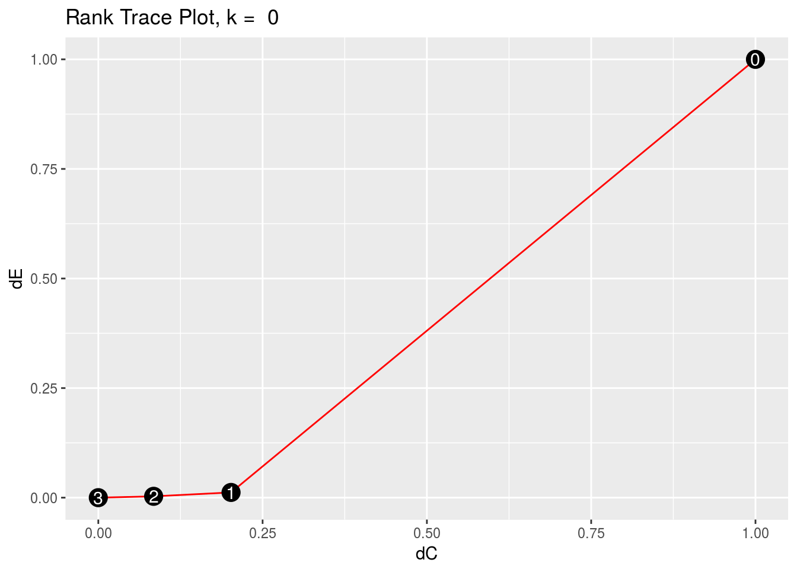
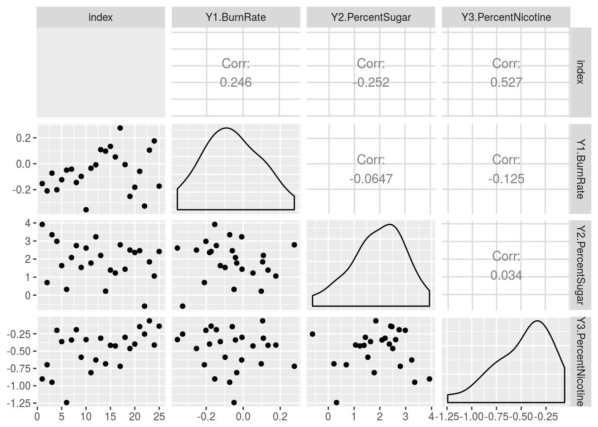
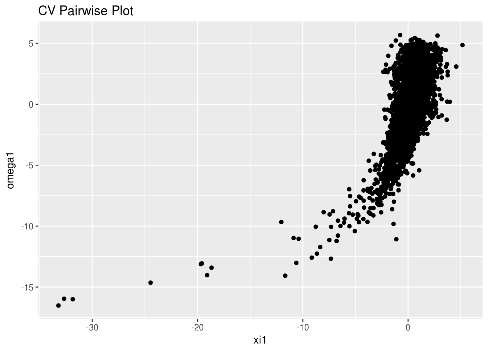
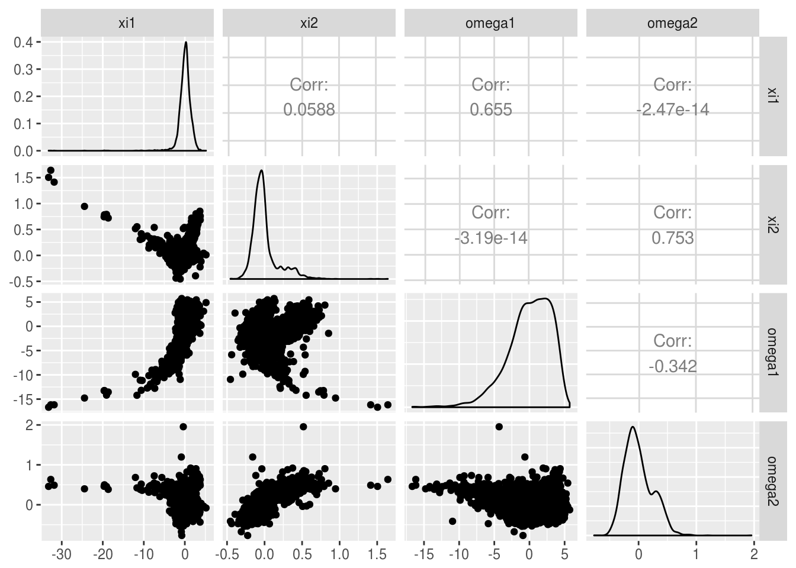
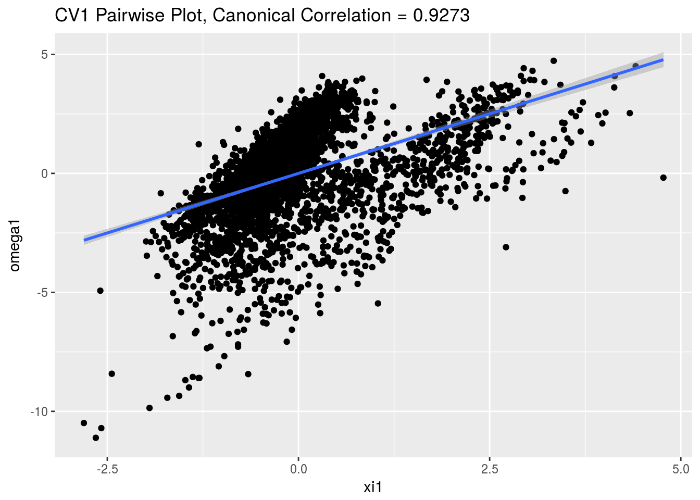

rrr for Multivariate Regression
Chris Addy
2016-12-15
This vignette assumes some familiarity on the part of the reader with principal component analysis1, canonical variate analysis2, and/or linear discriminant analysis3. For a more thorough treatment, see the appropriate references. Here we will show a brief mathematical motivation for reduced-rank regression and then show that principal component analysis, canonical variate analysis, and linear discriminant analysis are special cases of reduced-rank regression. For a more thorough treatment, see Modern Multivariate Statistical Techniques.4
library(rrr)Classical Multivariate Regression
Let \(\mathbf{X} = \left(X_1, X_2, \dots, X_r\right)^\tau\) and \(\mathbf{Y} = \left(Y_1, Y_2, \dots, Y_s\right)^\tau\) be jointly distributed random vectors with
\[ \mathrm{E}\left\{ \begin{pmatrix} \mathbf{X} \\ \mathbf{Y} \\ \end{pmatrix} \right\} = \begin{pmatrix} \boldsymbol{\mu}_X \\ \boldsymbol{\mu}_Y \\ \end{pmatrix}, \quad \mathrm{cov}\left\{ \begin{pmatrix} \mathbf{X} \\ \mathbf{Y} \\ \end{pmatrix} \right\} = \begin{pmatrix} \mathbf{\Sigma}_{XX} & \mathbf{\Sigma}_{XY} \\ \mathbf{\Sigma}_{YX} & \mathbf{\Sigma}_{YY} \\ \end{pmatrix} \]
The classical multivariate regression model is given by
\[ \overset{s \times 1}{\mathbf{Y}} = \overset{s \times 1}{\boldsymbol{\mu}} + \overset{s \times r}{\mathbf{C}} \; \overset{r \times 1}{\mathbf{X}} + \overset{s \times 1}{\varepsilon} \]
with
\[ \mathrm{E}\left(\varepsilon\right) = \mathbf{0}, \quad \mathrm{cov}\left(\varepsilon\right) = \mathbf{\Sigma}_{\varepsilon \varepsilon} \]
and \(\varepsilon\) distributed independently of \(\mathbf{X}.\)
To estimate \(\boldsymbol{\mu}\) and \(\mathbf{C}\) we minimize the least-squares criterion
\[ \mathrm{E}\left[\left(\mathbf{Y} - \boldsymbol{\mu} - \mathbf{C} \mathbf{X}\right)\left(\mathbf{Y} - \boldsymbol{\mu} - \mathbf{C}\mathbf{X}\right)^\tau\right], \]
with expecation taken over the joint distribution of \(\left(\mathbf{X}^\tau, \mathbf{Y}^\tau\right)\), with the assumption that \(\mathbf{\Sigma}_{XX}\) is nonsingular, and therefore invertible.
This is minimized when
\[ \begin{aligned} \boldsymbol{\mu} & = \boldsymbol{\mu}_Y - \mathbf{C} \boldsymbol{\mu}_X \\ \mathbf{C} & = \mathbf{\Sigma}_{YX} \mathbf{\Sigma}_{XX}^{-1} \end{aligned} \]
The least-squares estimator of \(\mathbf{C}\) is given by
\[ \hat{\mathbf{C}} = \hat{\mathbf{\Sigma}}_{YX} \hat{\mathbf{\Sigma}}_{XX}^{-1} \]
Note that \(\mathbf{C}\) – and hence \(\hat{\mathbf{C}}\) – contains no term that takes into the account the correlation of the \(Y_i\)s. This is a surprising result, since we would expect correlation among the responses.
In other words, to find the least-squares estimate \(\hat{\mathbf{C}}\) of \(\mathbf{C}\), one need only regress \(\mathbf{X}\) separately on each \(Y_i\) and concatenate those multiple-regression coefficient vectors into a matrix to construct the estimated coefficient matrix \(\hat{\mathbf{C}}\).
In some very important sense, the classical multivariate regression model is not truly multivariate.
The tobacco Data Set
library(dplyr)
data(tobacco)
tobacco <- as_data_frame(tobacco)We see that the tobacco data set5 has 9 variables and 25 observations. There are 6 \(X_i\) predictor variables – representing the percentages of nitrogen, chlorine, potassium, phosphorus, calcium, and magnesium, respectively – and 3 \(Y_j\) response variables – representing cigarette burn rates in inches per 1,000 seconds, percent sugar in the leaf, and percent nicotine in the leaf, respectively.
tobacco_x <- tobacco %>%
select(starts_with("X"))
tobacco_y <- tobacco %>%
select(starts_with("Y"))Below we see that there is not only correlation among the \(X_i\)s but also among the \(Y_i\)s. The classical multivariate will not capture that information.
We can get a good idea of the correlation structure using GGally::ggcorr. GGally is a package that extends the functionality of the package ggplot2 and has been utilized in rrr to create pairwise plots, as seen below.
GGally::ggcorr(tobacco_x)
We can see correlation between the \(X_i\)s, which will be accounted for in the classical multivariate regression model.
GGally::ggcorr(tobacco_y)
There is clearly correlation in the \(Y_i\)s, especially between percent nicotine and percent sugar. Any regression model that we fit should take this into account.
## multivariate regression
x <- as.matrix(tobacco_x)
y <- as.matrix(tobacco_y)
multivar_reg <- t(cov(y, x) %*% solve(cov(x)))
## separate multiple regression
lm1 <- lm(y[,1] ~ x)$coeff
lm2 <- lm(y[,2] ~ x)$coeff
lm3 <- lm(y[,3] ~ x)$coeffAs expected, the multivariate coefficients are the same as the multiple regression coefficients of each of the \(Y_i\)s
multivar_reg## Y1.BurnRate Y2.PercentSugar Y3.PercentNicotine
## X1.PercentNitrogen 0.06197282 -4.3186662 0.5521620
## X2.PercentChlorine -0.16012848 1.3262863 -0.2785609
## X3.PercentPotassium 0.29211810 1.5899470 0.2175877
## X4.PercentPhosphorus -0.65798016 13.9526510 -0.7231067
## X5.PercentCalcium 0.17302593 0.5525913 0.3230914
## X6.PercentMagnesium -0.42834825 -3.5021083 2.0048603cbind(lm1, lm2, lm3)## lm1 lm2 lm3
## (Intercept) 1.41113730 13.6329133 -1.5648236
## xX1.PercentNitrogen 0.06197282 -4.3186662 0.5521620
## xX2.PercentChlorine -0.16012848 1.3262863 -0.2785609
## xX3.PercentPotassium 0.29211810 1.5899470 0.2175877
## xX4.PercentPhosphorus -0.65798016 13.9526510 -0.7231067
## xX5.PercentCalcium 0.17302593 0.5525913 0.3230914
## xX6.PercentMagnesium -0.42834825 -3.5021083 2.0048603Reduced-Rank Regression
One way to introduce a multivariate component into the model is to allow for the possibility that \(\mathbf{C}\) is deficient, or of reduced-rank \(t\).
\[ \mathrm{rank}\left(\mathbf{C}\right) = t \leq \mathrm{min}\left(r, s\right) \]
In other words, we allow for the possibility that there are unknown linear constraints on \(\mathbf{C}\).
Without loss of generality, we consider the case when \(r > s\), i.e., \(t < s\).
When \(t = s\), the regression model is full-rank, and can be fit using multiple regression on each \(Y_i \in \mathbf{Y}\) as seen above. When \(t < s\), \(\mathbf{C}\) can be decomposed into non-unique matrices \(\mathbf{A}_{s \times t}\) and \(\mathbf{B}_{t \times r}\), such that \(\mathbf{C} = \mathbf{AB},\) and the multivariate regression model is given by
\[ \overset{s \times 1}{\mathbf{Y}} = \overset{s \times 1}{\boldsymbol{\mu}} + \overset{s \times t}{\mathbf{A}} \; \overset{t \times r}{\mathbf{B}} \; \overset{r \times 1}{\mathbf{X}} + \overset{s \times 1}{\varepsilon} \]
Estimating \(\boldsymbol{\mu}, \mathbf{A}, \mathbf{B}\), and the reduced-rank regression coefficient \(\mathbf{C}^{\left(t\right)}\), is done by minimizing the weighted sum-of-squares criterion
\[ \mathrm{E}\left[\left(\mathbf{Y} - \boldsymbol{\mu} - \mathbf{ABX}\right)^\tau \mathbf{\Gamma}\left(\mathbf{Y} - \boldsymbol{\mu} - \mathbf{ABX}\right)\right] \]
where \(\boldsymbol{\Gamma}\) is a positive-definite symmetric \(\left(s \times s\right)\)-matrix of weights. This expectation is taken over the joint distribution \(\left(\mathbf{X}^\tau, \mathbf{Y}^\tau\right)^\tau\). The weighted sum-of-squares criterion is minimized when
\[ \begin{aligned} \boldsymbol{\mu}^{\left(t\right)} & = \boldsymbol{\mu}_Y - \mathbf{A}^{\left(t\right)}\mathbf{B}^{\left(t\right)}\boldsymbol{\mu}_X \\ \mathbf{A}^{\left(t\right)} & = \mathbf{\Gamma}^{-1/2}\mathbf{V}_t \\ \mathbf{B}^{\left(t\right)} & = \mathbf{V}_t^\tau \boldsymbol{\Gamma}^{-1/2}\mathbf{\Sigma}_{YX}\mathbf{\Sigma}_{XX}^{-1} \\ \end{aligned} \]
where \(\mathbf{V}_t = \left(\mathbf{v}_1, \dots, \mathbf{v}_t\right)\) is an \(\left(s \times t\right)\)-matrix, with \(\mathbf{v}_j\) the eigenvector associated with the \(j\)th largest eigenvalue of
\[ \mathbf{\Gamma}^{1/2}\mathbf{\Sigma}_{YX} \mathbf{\Sigma}_{XX}^{-1} \mathbf{\Sigma}_{XY} \mathbf{\Gamma}^{1/2} \]
We try out different values of \(\mathbf{\Gamma}\) in applications. Two popular choices – and ones that lead to interesting results as we will see – are \(\mathbf{\Gamma} = \mathbf{I}_r\) and \(\mathbf{\Gamma} = \boldsymbol{\Sigma}_{YY}^{-1}\). The following is equivalent to performing canonical variate analysis.
Since the reduced-rank regression coefficient relies on inverting \(\boldsymbol{\Sigma}_{XX}\) and, possibly, \(\boldsymbol{\Sigma}_{YY}\), we want to take into consideration the cases when \(\boldsymbol{\Sigma}_{XX}, \boldsymbol{\Sigma}_{YY}\) are singular or difficult to invert.
We can perturb the diagonal of the covariance matrices by some small constant, \(k\). This will ensure that the covariance matrix is invertible by – only slightly – altering the data. The motivation for is taken from ridge regression6 in the multiple-regression context, and from the idea of softly-shrunken reduced-rank regression.7 Thus, we carry out the reduced-rank regression procedure using
\[ \begin{aligned} \hat{\boldsymbol{\Sigma}}_{XX}^{\left(k\right)} & = \hat{\boldsymbol{\Sigma}}_{XX} + k \mathbf{I}_r \\ \hat{\boldsymbol{\Sigma}}_{YY}^{\left(k\right)} & = \hat{\boldsymbol{\Sigma}}_{YY} + k \mathbf{I}_r \end{aligned} \]
Estimate \(t\) and \(k\) with rank_trace().
args(rank_trace)## function (x, y, type = "identity", k = 0, plot = TRUE, interactive = FALSE)
## NULL\(\hat{\mathbf{C}}\) is calculated using sample observations. Therefore its mathematical rank will always be full, but it will have a statistical rank \(t\) which is an unknown hyperparameter that needs to be estimated.
One method of estimating \(t\) is to plot the rank trace. Along the \(X\)-axis, we plot a measure of the difference between the rank-\(t\) coefficient matrix and the full-rank coefficient matrix for each value of \(t\). Along the \(Y\)-axis, we plot the reduction in residual covariance between the rank-\(t\) residuals and the full-rank residuals for each value of \(t\).
### use the identity matrix for gamma
rank_trace(tobacco_x, tobacco_y)
Set plot = FALSE to print data frame of rank trace coordinates.
rank_trace(tobacco_x, tobacco_y, plot = FALSE)## # A tibble: 4 × 3
## ranks dC dEE
## <int> <dbl> <dbl>
## 1 0 1.00000000 1.000000000
## 2 1 0.20198327 0.011933691
## 3 2 0.08419093 0.003095346
## 4 3 0.00000000 0.000000000When the weight matrix, \(\mathbf{\Gamma}\), takes on a more complicated form, the rank trace may plot points outside the unit square, or may not be a smooth monotic curve. When this is the case, we can change the value of k to smooth the rank trace. This value of \(k\) is then used as the ridge perturbation, \(k\), described above.
Fitting Reduced-Rank Regression Model
The main function in the rrr package is rrr() which fits a reduced-rank regression model and outputs the coefficients.
Fit reduced-rank regression model with rrr()
args(rrr)## function (x, y, type = "identity", rank = "full", k = 0)
## NULLrrr() takes as inputs the data frames, or matrices, of input and response variables, the type of reduced-rank regression procedure to perform, the rank (defaulted to full rank), and the ridge constant \(k\). The argument type defaults to type = "identity", which sets \(\mathbf{\Gamma} = \mathbf{I}\) but can be set to type = "pca", type = "cva", or type = "lda" to perform principal component analysis, canonical variate analysis, or linear discriminant analysis, respectively
rrr() outputs the appropriate coefficients depending on the type of reduced-rank regression performed.
rrr(tobacco_x, tobacco_y, rank = "full")## $mean
## [,1]
## Y1.BurnRate 1.411137
## Y2.PercentSugar 13.632913
## Y3.PercentNicotine -1.564824
##
## $A
## [,1] [,2] [,3]
## Y1.BurnRate 0.03107787 -0.4704307 0.8818895
## Y2.PercentSugar -0.97005030 0.1984637 0.1400521
## Y3.PercentNicotine 0.24090782 0.8598297 0.4501736
##
## $B
## X1.PercentNitrogen X2.PercentChlorine X3.PercentPotassium
## [1,] 4.3242696 -1.35864835 -1.4808316
## [2,] -0.4114869 0.09903401 0.3652138
## [3,] -0.3016163 -0.08086722 0.5782436
## X4.PercentPhosphorus X5.PercentCalcium X6.PercentMagnesium
## [1,] -13.729424 -0.4528289 3.86689562
## [2,] 2.456879 0.3060762 1.23030547
## [3,] 1.048309 0.3754285 0.03430168
##
## $C
## X1.PercentNitrogen X2.PercentChlorine
## Y1.BurnRate 0.06197282 -0.1601285
## Y2.PercentSugar -4.31866620 1.3262863
## Y3.PercentNicotine 0.55216201 -0.2785609
## X3.PercentPotassium X4.PercentPhosphorus
## Y1.BurnRate 0.2921181 -0.6579802
## Y2.PercentSugar 1.5899470 13.9526510
## Y3.PercentNicotine 0.2175877 -0.7231067
## X5.PercentCalcium X6.PercentMagnesium
## Y1.BurnRate 0.1730259 -0.4283482
## Y2.PercentSugar 0.5525913 -3.5021083
## Y3.PercentNicotine 0.3230914 2.0048603
##
## $eigenvalues
## [1] 3.28209974 0.03782978 0.01015996We can see that rrr() with rank = "full" and k = 0 returns the classical multivariate regression coefficients as above. They differ only by a transpose, and is presented this way in rrr as a matter of convention. It is this form that is presented in the literature.8
Plot and Print Residuals with residuals()
args(residuals)## function (x, y, type = "identity", rank = "full", k = 0, plot = TRUE)
## NULLPlot Residuals
We can visually check the model assumptions with residuals(). The leftmost column of the scatter plot can be used to look for serial patterns in the residuals. The diagonal can be used to look at the distribution and visually assess whether or not it is symmetric, has a mean of zero, etc.
residuals(tobacco_x, tobacco_y, rank = 1)
To print a data frame of the residuals, set plot = FALSE.
residuals(tobacco_x, tobacco_y, rank = 1, plot = FALSE)## # A tibble: 25 × 3
## Y1.BurnRate Y2.PercentSugar Y3.PercentNicotine
## <dbl> <dbl> <dbl>
## 1 -0.15358056 3.9207245 -0.9019766
## 2 -0.20963638 0.6975085 -0.6966471
## 3 -0.07296342 3.3478677 -0.9497452
## 4 -0.20128009 2.9831896 -0.1991789
## 5 -0.12358413 1.6364610 -0.3622142
## 6 -0.04949370 0.3195653 -1.2428487
## 7 -0.04185307 2.0824285 -0.3387954
## 8 -0.14497977 2.7465342 -0.1903404
## 9 -0.09788965 1.5330911 -0.5878621
## 10 -0.35531326 2.6111104 -0.3332054
## # ... with 15 more rowsPrincipal Components Analysis
PCA is a Special Case of Reduced-Rank Regression
Set
\[ \begin{aligned} \mathbf{Y} & \equiv \mathbf{X} \\ \mathbf{\Gamma} & = \mathbf{I}_r \end{aligned} \]
Then, the least squares criterion
\[ \mathrm{E}\left[\left(\mathbf{X} - \boldsymbol{\mu} - \mathbf{A}\mathbf{B} \mathbf{X}\right)\left(\mathbf{X} - \boldsymbol{\mu} - \mathbf{A}\mathbf{B} \mathbf{X}\right)^\tau\right] \]
is minimized when
\[ \begin{aligned} \mathbf{A}^{\left(t\right)} & = \left(\mathbf{v}_1, \dots, \mathbf{v}_t\right) \\ \mathbf{B}^{\left(t\right)} & = \mathbf{A}^{\left(t\right) \tau} \\ \boldsymbol{\mu}^{\left(t\right)} & = \left(\mathbf{I}_r - \mathbf{A}^{\left(t\right)}\mathbf{B}^{\left(t\right)}\right)\boldsymbol{\mu}_X \\ \end{aligned} \]
where \(\mathbf{v}_j = \mathbf{v}_j \left(\mathbf{\Sigma}_{XX}\right)\) is the eigenvector associated with the \(j\)th largest eigenvalue of \(\mathbf{\Sigma}_{XX}.\)
The best reduced-rank approximation to the original \(\mathbf{X}\) is
\[ \begin{aligned} \hat{\mathbf{X}}^{\left(t\right)} & = \boldsymbol{\mu}^{\left(t\right)} + \mathbf{A}^{\left(t\right)}\mathbf{B}^{\left(t\right)} \mathbf{X} \\ & \mathrm{or} \\ \hat{\mathbf{X}} & = \mathbf{A}^{\left(t\right)}\mathbf{B}^{\left(t\right)}\mathbf{X}_c \\ \end{aligned} \]
where \(\mathbf{X}_c\) is the vector \(\mathbf{X}\) after mean-centering.
The pendigits Data Set
data(pendigits)
digits <- as_data_frame(pendigits) %>% select(-V36)Forty-four writers hand-wrote the digits 0-9 250 times in random order on a in 5 500x500 pixel boxes on a pressure-sensitive tablet with integrated LCD screen. The first 10 digits were thrown out – without telling the writers – to ignore variation from the writers gaining familiarity with the device.9 The raw data of the coordinates was cleaned and translated.
digits_features <- digits %>% select(-V35)
digits_class <- digits %>% select(V35)We can get a good visualization of the correlation structure using GGally::ggcorr. Below we see that there is very heavy correlation among the variables.
GGally::ggcorr(digits_features)
Assessing Dimensionality
The ratio
\[ \frac{\lambda_{t + 1} + \cdots \lambda_r}{\lambda_1 + \cdots \lambda_r} \]
is a goodness-of-fit measure of how well the last \(r - t\) principal components explain the totoal variation in \(\mathbf{X}\)
The function rrr() (see below) outputs this goodness-of-fit measure
rrr(digits_features, digits_features, type = "pca")$goodness_of_fit## PC1 PC2 PC3 PC4 PC5
## 7.168777e-01 4.680599e-01 3.144671e-01 2.243293e-01 1.664009e-01
## PC6 PC7 PC8 PC9 PC10
## 1.181315e-01 8.737814e-02 6.065970e-02 4.138801e-02 2.763994e-02
## PC11 PC12 PC13 PC14 PC15
## 1.896530e-02 1.222037e-02 7.761240e-03 3.816942e-03 1.958674e-03
## PC16 PC17 PC18 PC19 PC20
## 3.133204e-04 1.279543e-04 -6.983068e-17 -8.770990e-17 -9.882538e-17
## PC21 PC22 PC23 PC24 PC25
## -1.092158e-16 -1.158156e-16 -1.172696e-16 -1.184188e-16 -1.145857e-16
## PC26 PC27 PC28 PC29 PC30
## -1.103970e-16 -1.053676e-16 -9.801713e-17 -8.865624e-17 -7.546966e-17
## PC31 PC32 PC33 PC34
## -6.161541e-17 -4.449590e-17 -2.257015e-17 0.000000e+00 Estimate \(t\) and ridge constant \(k\) with rank_trace()
rank_trace(digits_features, digits_features, type = "pca")
Print data frame of rank trace coordinates by setting plot = FALSE.
rank_trace(digits_features, digits_features, type = "pca", plot = FALSE)## # A tibble: 35 × 3
## rank delta_C delta_residuals
## <int> <dbl> <dbl>
## 1 0 1.0000000 1.00000000
## 2 1 0.9851844 0.71687775
## 3 2 0.9701425 0.46805987
## 4 3 0.9548637 0.31446713
## 5 4 0.9393364 0.22432933
## 6 5 0.9235481 0.16640087
## 7 6 0.9074852 0.11813147
## 8 7 0.8911328 0.08737814
## 9 8 0.8744746 0.06065970
## 10 9 0.8574929 0.04138801
## # ... with 25 more rows Pairwise Plots with pairwise_plot()
args(pairwise_plot)## function (x, y, type = "pca", pair_x = 1, pair_y = 2, rank = "full",
## k = 0, interactive = FALSE, point_size = 2.5)
## NULLA common PCA method of visualization is to plot the \(j\)th sample PC scores against the \(k\)th PC scores,
\[ \begin{aligned} \left(\xi_{ij}, \xi_{ik}\right) & \\ = \left(\hat{\mathbf{v}}_j^\tau \mathbf{X}_i, \hat{\mathbf{v}}_k^\tau \mathbf{X}_i\right)&, \quad i = 1,2, \dots, n \end{aligned} \]
Since the first two principal components will capture the most variance – and hence the most useful information – of all possible pairs of principal components, we typically would set \(j = 1, k = 2\) and plot the first two sample PC scores against each other. In rrr this is the default.
pairwise_plot(digits_features, digits_class, type = "pca")
We can set the \(x\)- and \(y\)-axes to whichever pairs of PC scores we would like to plot by changing the pair_x and pair_y arguments.
pairwise_plot(digits_features, digits_class, type = "pca", pair_x = 1, pair_y = 3)
Plot all pairs of PC scores with allpairs_plot()
args(allpairs_plot)## function (x, y, type = "pca", rank, k = 0)
## NULLAlternatively, we can look at structure in the data by plotting all PC pairs, along with some other visual diagnostics with allpairs_plot(). Along with plotting principal component scores against each other, the plot matrix also shows histograms and box plots to show how the points are distributed along principal component axes.
allpairs_plot(digits_features, digits_class, type = "pca", rank = 3)
Fit model with rrr()
rrr(digits_features, digits_features, type = "pca", rank = 3)## $means
## V1 V2 V3 V4 V5 V6 V7
## 38.814320 85.120269 40.605622 83.774199 49.770378 65.573144 51.220251
## V8 V9 V10 V11 V12 V13 V14
## 44.498999 56.868541 33.695961 60.516376 34.826510 55.022289 34.937045
## V15 V16 V17 V18 V19 V20 V21
## 47.287482 28.845342 4.431587 5.341794 38.814320 85.120269 40.605622
## V22 V23 V24 V25 V26 V27 V28
## 83.774199 49.770378 65.573144 51.220251 44.498999 56.868541 33.695961
## V29 V30 V31 V32 V33 V34
## 60.516376 34.826510 55.022289 34.937045 47.287482 28.845342
##
## $C
## # A tibble: 34 × 34
## V1 V2 V3 V4 V5
## <dbl> <dbl> <dbl> <dbl> <dbl>
## 1 0.15227028 0.041971586 0.057621563 0.032824603 -0.083070856
## 2 0.04197159 0.013118640 0.010598715 0.005435764 -0.027861499
## 3 0.05762156 0.010598715 0.057059768 0.042972135 0.005136858
## 4 0.03282460 0.005435764 0.042972135 0.034784478 0.014445469
## 5 -0.08307086 -0.027861499 0.005136858 0.014445469 0.083611542
## 6 -0.00509760 -0.010118470 0.048612391 0.041246125 0.054433598
## 7 -0.12925579 -0.039313730 -0.047145641 -0.030698476 0.070011543
## 8 -0.03613352 -0.021185046 0.025475341 0.019298193 0.056664934
## 9 -0.04375152 -0.018001465 -0.036555354 -0.038171115 -0.002983700
## 10 -0.05163631 -0.020586646 -0.022911782 -0.022807068 0.019987392
## # ... with 24 more rows, and 29 more variables: V6 <dbl>, V7 <dbl>,
## # V8 <dbl>, V9 <dbl>, V10 <dbl>, V11 <dbl>, V12 <dbl>, V13 <dbl>,
## # V14 <dbl>, V15 <dbl>, V16 <dbl>, V17 <dbl>, V18 <dbl>, V19 <dbl>,
## # V20 <dbl>, V21 <dbl>, V22 <dbl>, V23 <dbl>, V24 <dbl>, V25 <dbl>,
## # V26 <dbl>, V27 <dbl>, V28 <dbl>, V29 <dbl>, V30 <dbl>, V31 <dbl>,
## # V32 <dbl>, V33 <dbl>, V34 <dbl>
##
## $PC
## # A tibble: 34 × 3
## PC1 PC2 PC3
## <dbl> <dbl> <dbl>
## 1 0.02861158 -0.142768395 -0.36203431
## 2 0.04680878 -0.033512929 -0.09901748
## 3 -0.13901701 0.046687918 -0.18855842
## 4 -0.10267046 0.083217740 -0.13159811
## 5 -0.15980723 0.196663538 0.13927183
## 6 -0.24050660 0.117714673 -0.05134764
## 7 -0.10613246 0.031714447 0.33613210
## 8 -0.28960021 -0.002314316 0.07783244
## 9 -0.11746249 -0.263105908 0.21532196
## 10 -0.14441246 -0.150734547 0.19065755
## # ... with 24 more rows
##
## $goodness_of_fit
## PC1 PC2 PC3
## 0.7168777 0.4680599 0.3144671Canonical Variate Analysis
CVA as a Special Case of Reduced-Rank Regression
Canonical Variate Analysis10 is a method of linear dimensionality reduction that turns the original \(\mathbf{X}\) and \(\mathbf{Y}\) into new variables \(\boldsymbol{\xi}\) and \(\boldsymbol{\omega}\), respectively. Canonical variate analysis can be performed as a special case of reduced-rank regression.
Set \(\mathbf{\Gamma} = \mathbf{\Sigma}_{YY}^{-1}\). Then, the \(t\) new pairs of canonical variables \(\left(\xi_i, \omega_i\right), i = 1, \dots, t\) are calculated by fitting a reduced-rank – rank \(t\) – regression equation. The canonical variate scores are given by
\[ \boldsymbol{\xi}^{\left(t\right)} = \mathbf{G}^{\left(t\right)}\mathbf{X}, \quad \boldsymbol{\omega}^{\left(t\right)} = \mathbf{H}^{\left(t\right)} \mathbf{Y}, \]
with
\[ \begin{aligned} \mathbf{G}^{\left(t\right)} & = \mathbf{B}^{\left(t\right)} \\ \mathbf{H}^{\left(t\right)} & = \mathbf{A}^{\left(t\right)-} \\ \end{aligned} \]
where \(\mathbf{A}^{\left(t\right)}, \mathbf{B}^{\left(t\right)}\) are the matrices from the reduced-rank regression formulation above.
Note that \(\mathbf{H}^{\left(t\right)} = \mathbf{A}^{\left(t\right)-}\) is the generalized inverse of \(\mathbf{A}^{\left(t\right)}\). When \(t = s, \mathbf{H}^{\left(s\right)} = \mathbf{A}^{\left(t\right)+}\) is the unique Moore-Penrose generalized inverse of \(\mathbf{A}^{\left(t\right)}\).
The COMBO17 Data Set
### COMBO-17 galaxy data
data(COMBO17)
galaxy <- as_data_frame(COMBO17) %>%
select(-starts_with("e."), -Nr, -UFS:-IFD) %>%
na.omit()This data set11 comes from a public catalogue of objects in the Chandra Deep Field South, an area of the sky. This subset of the catalogue is all the objects classified as “Galaxies”, with only observations that do not have any missing values.12
galaxy_x <- galaxy %>%
select(-Rmag:-chi2red)
galaxy_y <- galaxy %>%
select(Rmag:chi2red)GGally::ggcorr(galaxy_x)
GGally::ggcorr(galaxy_y)
We can see above the heavy correlation among the \(X_i\)s and among the \(Y_i\)s. This data set, therefore, makes for a good candidate to perform canonical variate analysis.
Assessing Effective Dimensionality
Estimate \(t\) and \(k\) with rank_trace()
rank_trace(galaxy_x, galaxy_y, type = "cva")
Diagnostics
Plot and print residuals with residuals(), setting type = "cva".
Print Residuals
residuals(galaxy_x, galaxy_y, type = "cva", rank = 2, k = 0.001, plot = FALSE)## # A tibble: 3,462 × 3
## index CV1 CV2
## <int> <dbl> <dbl>
## 1 1 -0.3202596 0.5609487
## 2 2 -0.3373066 -0.3235156
## 3 3 0.2342563 0.2243338
## 4 4 0.2188205 0.6709930
## 5 5 -0.7183237 1.5344605
## 6 6 -1.0225019 0.1872628
## 7 7 0.2784014 0.5923622
## 8 8 -0.1242796 0.6893633
## 9 9 0.2544044 0.2704908
## 10 10 -0.6856947 -0.1686793
## # ... with 3,452 more rowsPlot Pairwise Canonical Variate Scores
Plot canonical variate scores with pairwise_plot()
pairwise_plot(galaxy_x, galaxy_y, type = "cva", pair_x = 1, k = 0.001)
Choose which pair of canonical variate scores to plot by changing the argument pair_x.
pairwise_plot(galaxy_x, galaxy_y, type = "cva", pair_x = 6)
Fit Reduced-Rank Canonical Variate Model
Fit model with rrr(), setting type = "cva".
rrr(galaxy_x, galaxy_y, type = "cva", rank = 2, k = 0.001)## $mean
## [,1]
## Rmag 28.523043
## ApDRmag 1.130048
## mumax 26.803027
## Mcz -1.194108
## MCzml -1.050103
## chi2red 2.088291
##
## $G
## UjMAG BjMAG VjMAG usMAG gsMAG rsMAG
## [1,] 0.1315681 0.003160348 0.3435075 0.1039602 0.06062877 -0.2369377
## [2,] -0.9238507 0.030925869 -2.0418261 1.2086276 0.38691864 1.9345899
## UbMAG BbMAG VnMAG S280MAG W420FE W462FE
## [1,] 0.1732176 -0.11817306 0.01467586 0.006356947 -0.4377527 -0.4795137
## [2,] -0.6174437 0.01606138 -0.07708084 0.039012047 -3.9767464 -2.3909886
## W485FD W518FE W571FS W604FE W646FD W696FE
## [1,] -0.4020248 -0.2363471 -0.1188914 0.04050373 0.1684356 0.1456478
## [2,] -1.3831963 0.6639545 -0.2649454 0.42582774 -0.1510068 -0.8822436
## W753FE W815FS W856FD W914FD W914FE
## [1,] 0.29307078 0.0239559 0.0266074 -0.2535550 -0.06707906
## [2,] 0.08978215 -1.7740911 0.2191533 0.5857208 0.77233519
##
## $H
## Rmag ApDRmag mumax Mcz MCzml chi2red
## [1,] 0.5596114 0.47045788 -0.1373677 -1.4375179 -1.3869182 0.5791827
## [2,] 0.2922679 -0.09798891 0.4366839 0.5862785 0.5703691 -0.2163637
##
## $canonical_corr
## [1] 0.927311439 0.354708001 0.063114244 0.018542243 0.005976463 0.003749350Print Canonical Variate scores
Print canonical variate scores with scores(), setting type = "cva".
scores(galaxy_x, galaxy_y, type = "cva", rank = 2, k = 0.001)## $xi
## # A tibble: 3,462 × 2
## xi1 xi2
## <dbl> <dbl>
## 1 0.10836091 0.18543845
## 2 -0.04389050 1.45530270
## 3 -0.93827110 0.05929021
## 4 0.05123639 0.23079948
## 5 0.04861913 -0.28347051
## 6 -0.57153625 0.37372222
## 7 0.44724681 0.48578465
## 8 0.52712428 0.22804914
## 9 0.11200447 0.17947745
## 10 3.05322631 -0.25235663
## # ... with 3,452 more rows
##
## $omega
## # A tibble: 3,462 × 2
## omega1 omega2
## <dbl> <dbl>
## 1 -0.2118987 0.7463871
## 2 -0.3811971 1.1317871
## 3 -0.7040148 0.2836240
## 4 0.2700569 0.9017924
## 5 -0.6697045 1.2509899
## 6 -1.5940381 0.5609850
## 7 0.7256482 1.0781469
## 8 0.4028447 0.9174124
## 9 0.3664088 0.4499682
## 10 2.3675316 -0.4210359
## # ... with 3,452 more rows
##
## $canonical_corr
## [1] 0.927311439 0.354708001 0.063114244 0.018542243 0.005976463 0.003749350Linear Discriminant Analysis
LDA as a Special Case of CVA
Linear discriminant analysis is a classification procedure. We can turn it into a regression procedure – specifically a reduced-rank canonical variate procedure – in the following way.
Let each \(i = 1, 2, \dots, n\) observation belong to one, and only one, of \(K = s + 1\) distinct classes.
We can construct an indicator response matrix, \(\mathbf{Y}\) where each row \(i\) is an indicator response vector for the \(i\)th observation. The vector will have a 1 in the column that represents that class to which the observation belongs and will be 0 elsewhere.
We then regress this \(Y\) binary response matrix against the matrix \(X\) of predictor variables.
Linear discriminant analysis requires the assumptions that each class is normally distributed and that the covariance matrix of each class is equal to all others.
While these assumptions will not be met in all cases, when they are – and when the classes are well separated – linear discriminant analysis is a very efficient classification method.
The iris Data Set
data(iris)
iris <- as_data_frame(iris)This is R.A. Fisher’s classic iris data set that comes packaged in base R.
iris_features <- iris %>%
select(-Species)
iris_class <- iris %>%
select(Species)Assesssing Effective Dimensionality
Assessing the rank \(t\) of this reduced-rank regression is equivalent to determining the number of linear discriminant functions that best discriminate between the \(K\) classes, with \(\mathrm{min}\left(r, s\right) = \mathrm{min}\left(r, K - 1\right)\) maximum number of linear discriminant functions.
Generally, plotting linear discriminant functions against each other, i.e., the first and second linear discriminant functions, is used to determine whether sufficient discrimination is obtained.
Plotting techniques are discussed in the following section.
Plot LDA Pairs
Plot LDA pairs with pairwise_plot(), setting type = "lda".
A typical graphical display for multiclass LDA is to plot the \(j\)th discriminant scores for the \(n\) points against the \(k\) discriminant scores.
pairwise_plot(iris_features, iris_class, type = "lda", k = 0.0001)
Fitting LDA Models
Fit LDA model with rrr(), setting type = "lda".
rrr(iris_features, iris_class, type = "lda", k = 0.0001)## $G
## # A tibble: 4 × 2
## LD1 LD2
## <dbl> <dbl>
## 1 -0.1427550 0.009711862
## 2 -0.2639139 0.905610891
## 3 0.3792278 -0.388369442
## 4 0.4826420 1.184645528
##
## $H
## # A tibble: 2 × 2
## LD1 LD2
## <dbl> <dbl>
## 1 -1.123703 -0.3319998
## 2 -0.265336 -1.1058423 Print LDA Scores with scores()
Print linear discriminant scores and the class means with scores(), setting type = "lda"
scores(iris_features, iris_class, type = "lda", k = 0.0001)## $scores
## # A tibble: 150 × 3
## LD1 LD2 class
## <dbl> <dbl> <fctr>
## 1 -1.387251 0.125583983 setosa
## 2 -1.226743 -0.329163835 setosa
## 3 -1.288897 -0.111147085 setosa
## 4 -1.172385 -0.280353248 setosa
## 5 -1.399367 0.215173886 setosa
## 6 -1.325346 0.611160171 setosa
## 7 -1.241218 0.148631516 setosa
## 8 -1.308661 -0.004785237 setosa
## 9 -1.128974 -0.424580855 setosa
## 10 -1.263476 -0.395904243 setosa
## # ... with 140 more rows
##
## $class_means
## # A tibble: 3 × 3
## LD1 LD2 class
## <dbl> <dbl> <fctr>
## 1 -1.3498742 0.4053488 setosa
## 2 0.3239739 -1.3716811 versicolor
## 3 1.0259003 0.9663322 virginicaHotelling, H. (1936). Analysis of a complex of statistical variables into principal components, Journal of Educational Psychology, 24, 417-411, 498-520.↩
Hotelling, H. (1936). Relations between two sets of variates, Biometrika, 28, 321-377.↩
Fisher, R.A. (1936). The use of multiple measurements in taxonomic problems, Annals of Eugencis, 7, 179-188.↩
Izenman, A.J. (2008). Modern Multivariate Statistical Techniques: Regression, Classification, and Manifold Learning. Springer.↩
Anderson, R.L and Bancroft, T.A (1952). Statistical Theory in Research, New York: McGraw-Hill. p. 205.↩
Hoerl, A.E. and Kennard, R. (1970). Ridge regression: Biased estimation for non-orthogonal problems. Technometrics 12: 55-67. Reprinted in Technometrics, 42 (2000), 80-86.↩
Aldrin, Magne. “Multivariate Prediction Using Softly Shrunk Reduced-Rank Regression.” The American Statistician 54.1 (2000): 29. Web.↩
Izenman, A.J. (2008). Modern Multivariate Statistical Techniques: Regression, Classification, and Manifold Learning. Springer.↩
Alimoglu, F. (1995). Combining multiple classifiers for pen-based handwritten digit recognition, M.Sc. thesis, Institute of Graduate Studies in Science and Engineering, Bogazici University, Istanbul, Turkey.↩
Hotelling, H. (1936). Relations between two sets of variates, Biometrika, 28, 321-377.↩
Wolf, C., Meisenheimer, M., Kleinheinrich, M., Borch, A., Dye, S., Gray, M., Wisotski, L., Bell, E.F., Rix, H.W., Cimatti, A., Hasinger, G., and Szokoly, G. (2004). A catalogue of the Chandra Deep Field South with multi-colour classification and photometric redshifts from COMBO-17, Astronomy & Astrophysics, https://arxiv.org/pdf/astro-ph/0403666.pdf↩
Donald Richards in the Department of Statistics at Pennsylvania State University helped Dr. Izenman in understanding the variables in this data set. The package author, by extension, would also like to acknowledge Dr. Richards for help in understanding the data set used in the text Modern Multivariate Statistical Techniques.↩